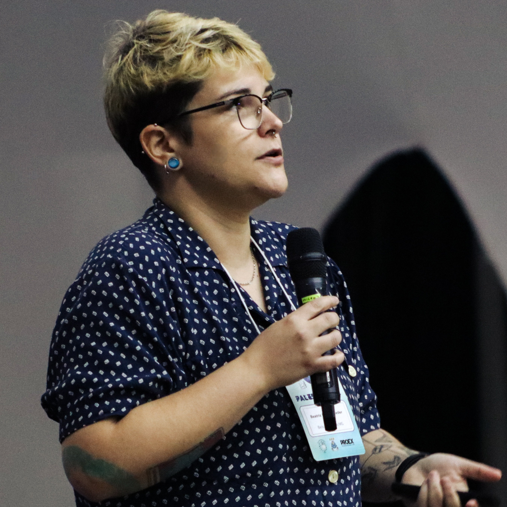

Parcerias
Comunicação e Publicidade – Estou aberta a parcerias e ações de publicidade em minhas redes sociais, sempre com responsabilidade e alinhadas aos meus princípios.
Palestras e Eventos – Tenho orgulho em colaborar com instituições públicas, museus e eventos científicos, muitas vezes de forma voluntária. No entanto, priorizo convites que contem com remuneração ou apoio institucional, de modo a garantir que meu trabalho continue sustentável e de qualidade.

Meu alcance

Criei o TikTok em 2023 como uma forma de transformar curiosidades, aprendizados e pesquisas em conteúdos curtos, claros e acessíveis. Foi o canal que me ajudou a desenvolver a linguagem da comunicação científica em formato digital, conectando biologia, paleontologia e a história da vida na Terra a uma audiência interessada em aprender de maneira leve, visual e envolvente.

A partir dos vídeos do TikTok, passei a desenvolver conteúdos com edição mais cuidadosa, incorporando modelos 3D e registros de campo do patrimônio natural brasileiro, voltados a um público que valoriza informação clara, visualmente atrativa e com profundidade.

O YouTube funciona como meu espaço de aprofundamento e registro de projetos maiores. É onde publico produções mais longas, como a série “Cronologia da Vida” e registros de viagens de campo.
Locais onde já palestrei
Faixa etária
-
18-24
25,7%
-
25-34
49,6%
-
35-44
17,4%
-
45-54
4%